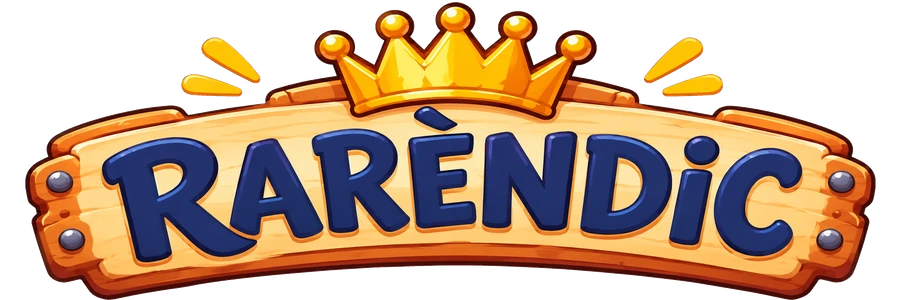

Set preguntes, 30 segons per respondre. Si falles, pots tornar-ho a provar mentre quedi temps. Com més rara és la paraula, més difícil és el forat i més avança el teu cavall.
Llistes revisades amb el diccionari de Softcatalà (Jaume Ortolà), llicència LGPL 2.1 / GPL 2.